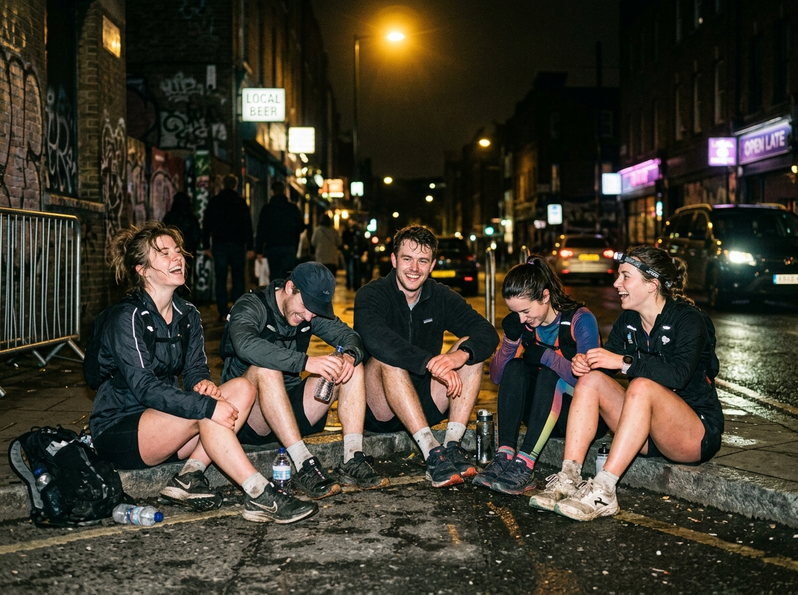

Runner of the Month

01

KAPAK: Kumpulan Arek Pelari Asal Keringetan — metafora membelah rasa malas, kasur empuk, dan keraguan diri sendiri sebelum matahari terbit.

"Ekspresi sebelum km 8"
"Nafas tinggal 10%"
"Pura-pura tegar"

"Finisher smile"

"Duduk santai sehabis lari"

Catatan Anisa menempuh 50 kilometer sementara anggota lain masih berdebat soal menu sarapan bubur.
Tiar dan Faisal berbagi tugas menyisir barisan belakang agar tidak ada yang tertinggal di Pendopo Paijo.
Taktik taktis Evan: lari di barisan paling belakang, finis tepat waktu, lalu lenyap tanpa jejak foto bersama.
Donasi sukarela untuk operasional air mineral galon di rute panjang, kotak P3K darurat, dan sarapan sweeper mingguan.